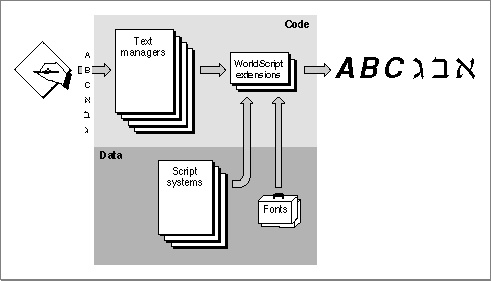

Components of the Macintosh Script Management System
This section describes the organization of the Macintosh script management system, those parts of the system software that provide support for the writing-system features described in the previous section, "Features of the World's Writing Systems."The Macintosh script management system makes it possible to represent many writing systems and languages on the Macintosh computer. With the Macintosh script management system, your application's text-manipulation capabilities can extend far beyond the Roman writing system and its languages. If you use its features your application can have a much wider market worldwide. You can implement text-handling capabilities that work properly with any supported writing system, or you can tailor your application to work correctly with any specific writing system or any regional variation of a writing system.
The script management system supplies much of the same basic capability for entering and displaying text as does a multi-language word processor--but on a system level. Since the capability is built into the system, you do not have to duplicate the code necessary to support each writing system; instead, you can devote your efforts to the primary functions of your application.
As Figure 1-31 shows, the script management system consists of
The text managers and the script extensions are mostly code; they execute the script-aware calls your application makes when handling text. The script systems and fonts are mostly data; they consist largely of tables of script-specific information used by the text routines, and glyph descriptions.
- routines in various components (managers) of system software
- two WorldScript extensions (optional)
- one or more script systems
- one or more fonts
Figure 1-31 Components of the script management system for text display

The Macintosh Text Managers
Several parts of Macintosh system software work together to provide specific text-handling services to your application. These text-related managers include the Script Manager, the text-handling components of QuickDraw, the Font Manager, the Text Utilities, the Text Services Manager, and the Dictionary Manager.The Script Manager
The Script Manager is at the center of the Macintosh script management system. It initializes script systems and makes them available to applications; it maintains important data structures and provides a standard application interface to script systems; it supports switching text input among different script systems; and it provides several text-manipulation services.The Script Manager works closely with the Text Utilities and with QuickDraw. Your program typically makes calls to all three managers in the course of text-handling, and in many cases a call to one of these managers results in internal calls among them. TextEdit also relies on the Script Manager, Text Utilities, and QuickDraw to make sure that it handles text correctly in any script system.
The Script Manager provides routines with which you can
In particular, the Script Manager gives you access to Script Manager variables, which control many overall settings of the text environment, and script variables, which control settings specific to each enabled script system.
- control the values of many script-related settings, including the system direction and the keyboard script
- get information about script systems, such as script codes, character-type information, and direct access to a script's international resources
- modify text through lexical conversion to tokens or phonetic conversion within a script system
- modify script systems by replacing international resources or routines
QuickDraw
QuickDraw is the graphics manager of Macintosh system software. The graphics components of QuickDraw are described in the QuickDraw chapters in Inside Macintosh: Imaging; the text-handling components of QuickDraw are described in the chapter "QuickDraw Text" in this book.Your application makes QuickDraw calls to write text to the screen or to a printer. When QuickDraw draws text, it places bitmapped shapes on the display device that represent the characters it is drawing. The characters are drawn according to the settings of the currrent window's graphics port record, which includes the location at which to draw and a specification of the font and character attributes with which to draw.
For text in various script systems, the QuickDraw text routines allow you to
- set the characteristics of the drawing environment
- draw text
- measure the width of text
- lay out lines of text
- determine caret positions and highlight text
Font Manager
QuickDraw cannot draw text without a font. The Font Manager supports QuickDraw by providing the character bitmaps that QuickDraw needs, in the typefaces, sizes, and styles that QuickDraw requests. The Font Manager keeps track of all fonts available to an application. The Font Manager supports fonts in many languages, for both bitmapped and outline fonts, and for both 1-byte and 2-byte fonts.Besides providing QuickDraw with the bitmaps it needs, the Font Manager provides routines with which you can
- determine the characteristics of a font
- change certain font settings, such as fractional widths or scaling
- favor outline fonts over bitmapped fonts
- manipulate fonts in memory
Text Utilities
The Text Utilities are an integrated collection of routines for performing a variety of operations on text, ranging from sorting strings to formatting dates and times to finding word boundaries. The Text Utilities work in conjunction with the Macintosh script management system and can take into account the differences in text-handling among script systems. If you use these routines you can handle text operations in a manner that is transportable to different parts of the world.Many of the Text Utilities routines are script-aware; they work in conjunction with the Script Manager and with QuickDraw to determine the script-system characteristics of text and to prepare the text for drawing to the screen or printing.
The Text Utilities provide routines that, for text in any script system, allow you to
- define strings in various ways
- compare and sort strings
- modify the contents of strings by truncation, stripping of diacritical marks, case conversion, or replacement
- find boundaries of words, lines, and runs of Roman characters
- convert and format date and time strings
- convert and format numeric strings
Text Services Manager
The Text Services Manager is the part of Macintosh system software that provides an environment for applications to use text services such as input methods. The Text Services Manager handles communication between client applications and text service components. Text service components are specialized software modules for entry, processing, or formatting of text.Client applications can use the Text Services Manager to
Text service components can use the Text Services Manager to
- make text services available to the user
- search for and communicate with text service components
- accept text input or other information from text service components
- ask for a special floating input window service
- make their text service available to an application
- act on events involving their windows, menus, or cursor
- pass text input or other information to an application
- display floating utility windows
Dictionary Manager
The Dictionary Manager is the part of Macintosh system software that allows you to create dictionaries for input methods and other text services that let the user enter, format, and process text. A dictionary is a data file with information essential to the conversion of text from one form to another. Most input methods provide both a main dictionary, which contains standard information for conversion between forms, and a user dictionary, which allows users to add custom information.The Dictionary Manager defines a uniform and public dictionary format that you can apply to your text service's dictionaries. The Dictionary Manager provides routines with which you can
- create and access a dictionary
- locate, insert, or delete records in a dictionary
- compact data in a dictionary
The WorldScript Extensions
The Roman script system, always available on every Macintosh, needs only the previously mentioned managers to function correctly. Several other similar script systems also need no other software. However, for those 1-byte script systems that have contextual characters or right-to-left line direction, additional code is needed so that the Script Manager, Text Utilities, and QuickDraw routines can work properly. Likewise, 2-byte script systems need code extensions in order to properly handle the thousands of characters they use.Although each writing system has unique requirements and procedures for presenting, sorting, and formatting text, in many cases separate script systems can use similar algorithms. Therefore, to avoid inconsistencies and unnecessary duplication of code, the script management system supplies two system extension files--WorldScript I and WorldScript II--that support 1-byte complex script systems and 2-byte script systems, respectively (see "Types of Script Systems" on page 1-46). They contain code that implements many script-aware text-manipulation routines, eliminating the need for each script system to maintain its own code extensions. Script-specific behavior is encoded in resource-based tables accessed by the extensions.
WorldScript I and WorldScript II are described in the appendix "Built-in Script Support" in this book.
WorldScript I
WorldScript I is the script extension that implements table-driven text measuring and drawing behavior for all 1-byte complex script systems (such as Hebrew, Arabic, Thai, and Devanagari). Using tables in each script system's international resources, WorldScript I performs text manipulation properly for all supported scripts. WorldScript I is a single file located in the Extensions folder within the System Folder on the user's Macintosh. It installs all compatible 1-byte script systems that are present in the System file, and provides them with a standard set of script-aware text-manipulation routines.WorldScript I implements script utilities, the low-level routines through which an individual script system implements script-aware Text Utilities, QuickDraw, and Script Manager routines. WorldScript I also implements patches to certain QuickDraw and Font Manager text-handling routines.
The Script Manager provides routines that allow you to modify or replace a 1-byte complex script system's script utilities and QuickDraw patches. See the chapter "Script Manager" in this book.
WorldScript II
WorldScript II is the script extension that implements table-driven text measuring and drawing behavior for all 2-byte (Chinese, Japanese, Korean) script systems. Using tables in each script system's international resources, WorldScript II performs text manipulation properly for all supported scripts. WorldScript II is a single file located in the Extensions folder within the System Folder on the user's Macintosh. It installs all compatible 2-byte script systems that are present in the System file, and provides them with a standard set of script-aware text-manipulation routines.Like WorldScript I, WorldScript II implements script utilities that implement script-aware Text Utilities, QuickDraw, and Script Manager routines. Unlike WorldScript I, WorldScript II does not support the Script Manager routines that allow replacement of script utilities.